INSERT INTO production.locker (locker_number, location)
VALUES ('L-107', 'Locker room, row 2');6 From Class Models to Tables
NoteLearning objectives
After reading this chapter you should be able to:
- list the steps of mapping a class model to tables, and say what each step produces
- map a class to a table, with columns whose types and constraints implement the attributes’ domains
- map one-to-many, one-to-one, and many-to-many associations to foreign keys and tables
- decide which table holds the foreign key of a one-to-one association, from the business context
- map association classes, recursive associations, and compositions
- map a qualified association to a composite key
- map generalization, and state what each mapping enforces and what it does not
- choose between surrogate and natural keys, and name keys consistently
- write the complete relational schema that a mapping produces
Chapter 5 built class models of HG Industries: what the business records and how the things it records are related. Chapter 2 read the tables that implement those models. This chapter connects the two. It presents the rules that turn each construct of a class diagram into tables, columns, keys, and constraints, following Blaha and Premerlani (Blaha and Premerlani 1998), and it applies them to the models of Chapter 5 to produce, step by step, the tables of the book’s database.
The chapter begins with the whole process, seven steps from a reviewed class model to a complete relational schema, and then illustrates each step on the models of Chapter 5, showing each time the part of the class diagram being mapped and where each of its parts goes in the tables. The rules are few, and most of them are mechanical once the class model is right. That is the point of designing in a class model first: the judgment goes into the model, where the business can review it, and the mapping carries the model’s meaning into tables without adding any. Every mapping in this chapter ends in a complete relational schema, in the notation of Section 2.4, that holds everything needed to create the tables, which Chapter 8 does.
TipFollowing along
The chapter maps the class models of Chapter 5, stage by stage, and shows the resulting schemas as your dbconcepts database holds them.
6.1 The mapping process
This section presents the whole mapping, from a class model to tables, as a sequence of steps, before the sections that illustrate each step.
Designing a database has two phases. The first turns a class model into a relational schema: the tables, their columns, their keys, and the rules that connect them. The second turns the relational schema into statements that a database system runs to create the tables. This chapter presents the first phase, and Chapter 8 the second. Figure 6.1 shows the first phase as seven steps.
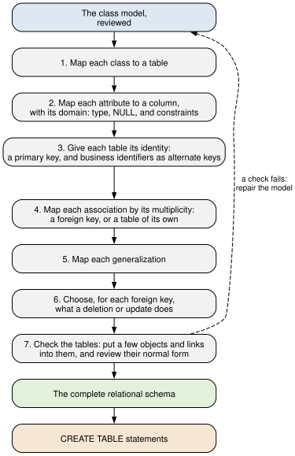
The steps of Figure 6.1 are applied to a whole model, one step at a time: all of its classes, then all of their attributes, and so on, since a later step needs the tables and keys of the earlier ones. In words, they are:
- Map each class to a table. Every class becomes a table of its own, named for the class.
- Map each attribute to a column, with its domain. Each column gets a type that holds the attribute’s values,
NOT NULLunless the attribute may be missing, and aCHECKfor a domain narrower than its type. - Give each table its identity. Each table gets a primary key, which the class model does not name, and each business identifier becomes an alternate key.
- Map each association by its multiplicity. An association becomes a foreign key in one of its classes’ tables when a link can be recorded there as a single value, and a table of its own when it cannot.
- Map each generalization. A superclass and its subclasses become tables that share a key, or are combined, in one of three ways.
- Choose what a deletion does to each foreign key. A foreign key refuses the deletion of the row it refers to, unless its association is a composition, whose parts go with their whole.
- Check the tables. Put a few objects and links into the tables, as rows, and see whether they hold them without loss or contradiction; then review the tables’ normal form, which Chapter 7 presents. A check that fails sends the designer back to the class model, along the dashed arrow of the figure.
The result is a complete relational schema, in the notation of Section 2.4: every table with its columns, types, NULL rules, keys, checks, and the deletion rule of each foreign key. It holds everything Chapter 8 needs to create the tables. The sections that follow illustrate the steps in order:
| Step | Illustrated in |
|---|---|
| 1 to 3: classes, attributes, identity | Section 6.2, and in depth Section 6.6 |
| 4 and 6: associations and deletions | Section 6.3 and Section 6.4 |
| 5: generalization | Section 6.5 |
| 7: checking the tables | the check and the interpretation of Example 6.3 |
Step 7 deserves a word before the details. When a mapping seems hard, the trouble is usually in the class model, not the rules. The remedy is the one of Section 5.4: draw a cloud instance diagram of a few objects and links, and put the same objects and links into the tables as rows. If the rows cannot hold what the diagram shows, or hold something it forbids, the model or the mapping is wrong, and the diagram says where.
6.2 Mapping classes
This section illustrates steps 1 to 3 of Figure 6.1: how a class becomes a table, its attributes become columns, and the table gets its keys. Figure 6.2 shows the Customer class of Figure 5.1, with a note that says where each of its parts goes.
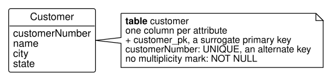
Each class maps to a table, as the note of Figure 6.2 begins. The table is named for the class, in the snake_case of Section 2.4 (CustomerOrder becomes customer_order), and in the singular, since the table implements the class and the class describes one object. Each attribute maps to a column, named the same way (customerNumber becomes customer_number). Recall from Section 5.3.1 that a value split into parts, such as a point’s location, is several attributes (latitude and longitude), and so becomes several columns.
Each column needs a data type, and the type comes from the attribute’s domain (Section 5.3). Choosing it is the first place where a design meets the implementation, and it is best done in two steps. The first specifies each attribute’s domain in words, with whether the attribute may be missing; the second chooses the SQL type and the constraints that implement each domain. For the Customer class of Figure 5.1, the two steps give:
| Attribute | Domain | May be missing? | SQL type and constraints |
|---|---|---|---|
customerNumber |
a number assigned by the company, C- and four digits |
no | VARCHAR(10) NOT NULL UNIQUE |
name |
the business’s name | no | VARCHAR(60) NOT NULL |
city |
a city name | no | VARCHAR(40) NOT NULL |
state |
a two-letter US state code | no | CHAR(2) NOT NULL |
Three things in Table 6.2 come straight from the class model. An attribute without a multiplicity has exactly one value, so its column is NOT NULL; an attribute marked [0..1], such as requestedShipDate, becomes a column that allows NULL. A business identifier becomes a UNIQUE column, since the business promises that no two objects share it; customerNumber is the alternate key found in Example 2.1. And a domain narrower than any SQL type, such as a price that must be positive, becomes a CHECK constraint, as list_price > 0 does for products.
Each table needs a primary key, and here the class model gives no help, deliberately: objects are distinguishable in themselves, and a class model names no identifier (Section 5.3). The mapping must supply one. The book’s database supplies a surrogate key for every table: a column named for its table with the suffix _pk, whose values PostgreSQL generates. The business identifier stays a UNIQUE column beside it. Section 6.6 weighs this choice against using the business identifier itself as the primary key.
With a key chosen, the class is fully mapped. Listing 6.1 gives the complete relational schema of the customer table of stage D1, the result of mapping Table 6.2.
customer
customer_pk INTEGER not NULL, generated
customer_number VARCHAR(10) not NULL
name VARCHAR(60) not NULL
city VARCHAR(40) not NULL
state CHAR(2) not NULL
primary key: customer_pk
alternate key: customer_numberEvery line of Listing 6.1 traces back to the model or to a decision of this section: the columns to the attributes, not NULL to the attributes’ multiplicities, the alternate key to the business identifier, and the primary key, generated by the database, to the surrogate key. The table has no foreign key, since Customer in stage D1 has no associations. The next section adds them.
6.3 Mapping associations
This section illustrates steps 4 and 6 of Figure 6.1: how each kind of association becomes a foreign key or a table, according to its multiplicities, and what a deletion does to it.
Recall the cloud instance diagram of Figure 5.5: each link of the association between customers and their orders is a line from one customer dot to one order dot. A table has no lines. It records a link as a value: the row of each order holds the key of the customer it is linked to, in a foreign key column. That works because each order has exactly one link. Every rule of this section follows from one question: where can a link be recorded as a single value? Each case below shows the fragment of a class diagram being mapped, with a note on the class whose table receives what the association becomes.
6.3.1 One-to-many associations
Figure 6.3 shows the association between customers and their orders of Figure 5.1.
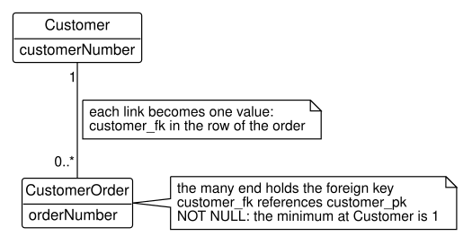
Read the multiplicities of Figure 6.3 from the CustomerOrder end. Each order is linked to exactly 1 customer, so each order’s row can hold its customer’s key; the note on the link says so. A one-to-many association therefore maps to a foreign key in the table of the many end: customer_fk in customer_order, referring to customer_pk. The minimum at the one end decides NULL. The 1 at the Customer end has a minimum of one, so every order must have its customer and customer_fk is NOT NULL, as the note on CustomerOrder says; a minimum of 0 there would allow NULL for an order with no customer. The 0..* at the CustomerOrder end needs nothing in the tables: a customer with no orders is simply a customer whose key appears in no order’s customer_fk. Listing 6.2 gives the resulting relational schema.
customer (customer_pk, customer_number, name, city, state)
primary key: customer_pk
alternate key: customer_number
customer_order (customer_order_pk, order_number, order_date,
requested_ship_date, customer_fk)
primary key: customer_order_pk
alternate key: order_number
customer_fk references customer_pk in customer,
must not be NULLEach element of Figure 6.3 has a line in Listing 6.2. The two classes are the two tables; the association is the last line, the foreign key that references customer_pk; and the minimum of 1 at the Customer end is its must not be NULL. This is the schema of stage D2 that Chapter 2 read in Listing 2.1, now seen as the product of a mapping.
6.3.2 One-to-one associations
The book’s database has no one-to-one association of its own, but the maintenance model of Exercise 5.17 has one: each machine has at most one maintenance plan, and each plan belongs to exactly one machine, as Figure 6.4 shows.
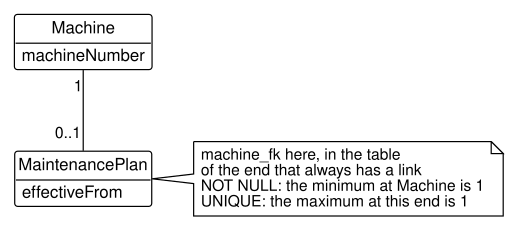
Each object at each end of Figure 6.4 has at most one link, so either table could hold the foreign key. The note puts it in the table of the end whose objects always have a link, the plan’s, so that it can be NOT NULL: every plan has its machine. A second constraint keeps the association one-to-one. Without it, two plans could name the same machine, and the 0..1 at the plan end would become 0..*. A one-to-one association therefore maps to a foreign key made UNIQUE: machine_fk in maintenance_plan, NOT NULL and UNIQUE. The machine table is stage P3’s, as Listing 6.3 gives it.
machine (machine_pk, machine_number, model, installed_on,
work_center_fk)
primary key: machine_pk
alternate key: machine_number
work_center_fk references work_center_pk in work_center,
must not be NULLThe maintenance_plan table is hypothetical, since the book’s database holds no maintenance plans, so Listing 6.4 is written out by hand, in the notation of the book’s generated listings.
maintenance_plan (maintenance_plan_pk, effective_from,
machine_fk)
primary key: maintenance_plan_pk
alternate key: machine_fk
machine_fk references machine_pk in machine,
must not be NULLThe UNIQUE constraint on machine_fk appears in Listing 6.4 as an alternate key, which is what it is: no two plans share a machine, so a machine identifies at most one plan. The machine table of Listing 6.3 is unchanged by the association, as the 0..1 at the plan end requires nothing of it.
6.3.3 Choosing the side of a one-to-one association
In Figure 6.4 the minimums decided the side: one end is mandatory and the other optional, so the foreign key went in the table of the objects that always have a link, where it could be NOT NULL. When both ends are 1, or both are 0..1, the multiplicities treat the two tables alike, and either side gives a correct schema. The choice is then a design decision, and the business context decides it. You should weigh three questions, in order:
- Does one object depend on the other? An object that exists only for the other, or is always created after it, holds the foreign key: a maintenance plan exists for its machine. If the association is a composition, step 6 then lets the dependent object’s row be deleted with its whole.
- Which end could become many? A rule that holds today may loosen. Put the foreign key in the table of the end that could become many; if the rule loosens, the association becomes one-to-many, and the change is only to drop the
UNIQUEconstraint. - Which table do users start from? The question asked most often names one object and wants that object’s own facts with its partner’s identifier. A foreign key in that object’s table answers it from one table, with no join, provided the column holds an identifier that people read.
The order matters. A schema that must be changed when the business changes costs more than a join, so the second question outranks the third.
Two other mappings complete the choices. When both ends are 1 and the two objects are created and removed together, one table can hold the attributes of both classes, and no foreign key is needed. When both ends are 0..1, a foreign key on either side would often be NULL; a table of its own for the association, holding the two foreign keys, each UNIQUE, records only the links that exist.
Whichever side holds it, one foreign key enforces one end fully and the other end only in part. A foreign key that is NOT NULL and UNIQUE gives each row of its table exactly one partner, the 1 at the partner’s end, and lets no two rows share a partner, the maximum of the 1 at its own end. Nothing makes every row of the other table a partner, so the minimum of that 1 is left to the application, or to a query that looks for the rows it misses.
Example 6.1 (Assigning lockers to operators) The system. The production schema of stage P3 holds the plant’s six operators. Suppose the plant also tracks the locker room: each locker is numbered on its door (L-101 to L-106), every operator has exactly one locker, and, apart from the day between an operator leaving and the next hire, every locker has exactly one operator. Figure 6.5 models the rule: the 1 at the Locker end says that each operator has exactly one locker, and the 1 at the Operator end that each locker has exactly one operator.
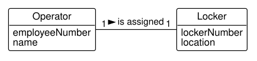
The request. Human resources asks almost every day for an operator’s details with the number of the operator’s locker, to issue a key or to welcome a new hire. “Who uses locker L-104?” is asked only when a locker is found open.
The design. Both ends of Figure 6.5 are 1, so the minimums do not decide, and we take the three questions in turn. Neither object depends on the other: the lockers are fixtures of the room, and operators are hired and leave. The second question asks the business about the future, and the plant’s answer is that operators on different shifts may one day share a locker. The operator end could then become many, so the foreign key belongs in the operator table. The third question agrees: human resources starts from the operator and wants the operator’s own details with the locker’s number.
Under the book’s convention of surrogate keys (Section 6.6), the operator’s row would hold locker_fk, the locker’s locker_pk, as Listing 6.5 gives it.
locker (locker_pk, locker_number, location)
primary key: locker_pk
alternate key: locker_number
operator (operator_pk, employee_number, name, hire_date,
locker_fk)
primary key: operator_pk
alternate keys: employee_number, locker_fk
locker_fk references locker_pk in locker,
must not be NULLA locker_fk of 4 means nothing to a clerk, so the everyday question still needs a join to locker to print L-104, although the foreign key sits in the table the question starts from. Recall from Section 2.2 that a foreign key refers to a candidate key, not only to the primary key, so any column declared UNIQUE will do. Referring to the locker’s number instead, as Listing 6.6 does, puts the identifier people read in the operator’s row. The column keeps the name of the key it holds, locker_number, rather than locker_fk, which the book keeps for a column that holds another table’s surrogate key.
locker (locker_pk, locker_number, location)
primary key: locker_pk
alternate key: locker_number
operator (operator_pk, employee_number, name, hire_date,
locker_number)
primary key: operator_pk
alternate keys: employee_number, locker_number
locker_number references locker_number in locker,
must not be NULLThe result. With the tables of Listing 6.6, the everyday question reads one table:
SELECT employee_number, name, locker_number
FROM production.operator
ORDER BY employee_number;| employee_number | name | locker_number |
|---|---|---|
| E-201 | Maria Lopez | L-104 |
| E-202 | James Carter | L-101 |
| E-203 | Linda Nguyen | L-106 |
| E-204 | Robert Hayes | L-102 |
| E-205 | Aisha Patel | L-105 |
| E-206 | Tom Becker | L-103 |
The check. Each operator’s row holds one locker number, so the query returns one row per operator, six in all, which Table 6.3 has. The six locker numbers are all different, as the alternate key on locker_number requires.
Interpretation. The design follows the plant’s own answers: the foreign key sits where a shared locker would put it, and the question human resources asks every day needs no join. “Who uses locker L-104?” still has an answer, through the operator table, which Table 6.3 shows is Maria Lopez.
Where it breaks. Two conditions break the design. First, the locker numbers must stay as they are: if the plant renumbered its lockers, every operator’s locker_number would have to change with them, which the response of cascading an update (Section 2.3), declared as ON UPDATE CASCADE, can do. Second, the foreign key enforces the 1 at the Locker end, but only the maximum of the 1 at the Operator end. A locker that no operator is assigned to breaks the minimum of that 1, and nothing refuses it:
SELECT l.locker_number, l.location
FROM production.locker AS l
WHERE NOT EXISTS (SELECT *
FROM production.operator AS o
WHERE o.locker_number = l.locker_number);| locker_number | location |
|---|---|
| L-107 | Locker room, row 2 |
The insert of L-107 is accepted, and only a query like that of Table 6.4 finds it. A business that changed its mind about the second question, deciding instead that an operator might be given a second locker for tools, would reverse the design: the locker end could become many, and the foreign key would belong in locker, at the price of a join for the everyday question.
6.3.4 Many-to-many associations and association classes
Figure 6.6 shows the association of warehouses and products from Figure 5.7, with its association class StockLevel.
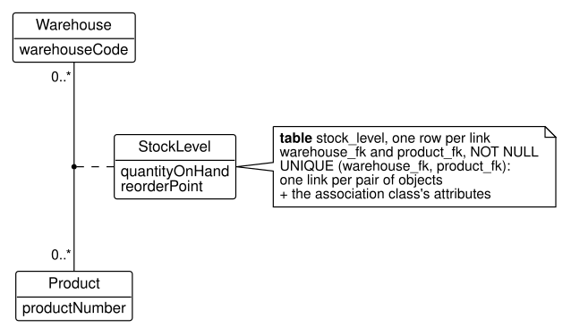
Both ends of Figure 6.6 are 0..*, so an object at either end may have many partners, and neither end’s table can hold its links as a single value. A many-to-many association therefore maps to a table of its own, whose rows are the links: each row holds two foreign keys, one to each end. The association class supplies the rest of the row, its attributes, which is why the note sits on StockLevel: the association and its class map together to the stock_level table, with warehouse_fk, product_fk, quantity_on_hand, and reorder_point. Recall Figure 5.6: each line there, with its quantity, is now one row.
The rule of Section 5.4, one link per pair of objects, also maps, as the note’s UNIQUE line says. Two rows of stock_level with the same warehouse and product would be two links between one pair, so the pair of foreign keys is a key of the table: UNIQUE (warehouse_fk, product_fk). The database then enforces the rule. An attempt to add a second stock level for the HT-100 at Fayetteville, at stage D4, fails:
INSERT INTO distribution.stock_level
(warehouse_fk, product_fk,
quantity_on_hand, reorder_point)
VALUES (1, 1, 5, 10);ERROR: duplicate key value violates unique constraint "stock_level_warehouse_fk_product_fk_key"
DETAIL: Key (warehouse_fk, product_fk)=(1, 1) already exists.Thus, an association class maps to a table whose foreign keys, taken together, are a key. In the book’s database that table also has a surrogate key, stock_level_pk, and the pair of foreign keys is an alternate key; Section 6.6 explains why. Listing 6.7 gives the resulting relational schema of the three tables.
product (product_pk, product_number, description,
list_price)
primary key: product_pk
alternate key: product_number
warehouse (warehouse_pk, warehouse_code, city, state)
primary key: warehouse_pk
alternate key: warehouse_code
stock_level (stock_level_pk, warehouse_fk, product_fk,
quantity_on_hand, reorder_point)
primary key: stock_level_pk
alternate key: (warehouse_fk, product_fk)
warehouse_fk references warehouse_pk in warehouse,
must not be NULL
product_fk references product_pk in product,
must not be NULLThe two classes of Figure 6.6 map to product and warehouse, which the association leaves unchanged, and the association with its class maps to stock_level: its two foreign keys are the two ends of each line of Figure 5.6, its alternate key is the rule of one link per pair, and its other columns are the class’s attributes.
6.3.5 Recursive associations
A recursive association maps by the same rules as any other; its ends happen to attach to the same class, or to a class and one of its subclasses. Only where the rules end up is new. In a one-to-many recursive association, both ends are the same table, so the table’s foreign key refers to the table itself. This subsection maps one of each kind, a one-to-many association first.
Example 6.2 (Mapping each operator’s lead) The system. The production schema of stage P3 holds the plant’s six operators. Suppose the plant organizes them into crews: each operator reports to at most one lead operator, and a lead may lead any number of operators. No operator is the operator’s own lead. Robert Hayes leads the plant and reports to no one. Figure 6.7 models the rule as an association of Operator with itself, with a role name at each end: the 0..1 at the lead end says that each operator has at most one lead, and the 0..* at the crewMember end that a lead has any number of crew members.
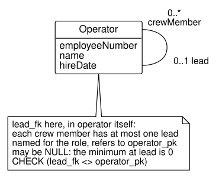
The request. Map the association so that the database records who leads whom.
The design. Both ends of Figure 6.7 attach to one class, so both ends are the operator table, and the rule that the foreign key goes in the table of the many end no longer says enough. The question becomes which rows hold the foreign key, and whose key they hold. A cloud instance diagram answers it, as Figure 5.13 did for the bill of materials, by drawing the class once for each role. Figure 6.8 draws the six operators twice: on the left as crew members, on the right as leads. Each line is one link, from a crew member to the crew member’s lead.
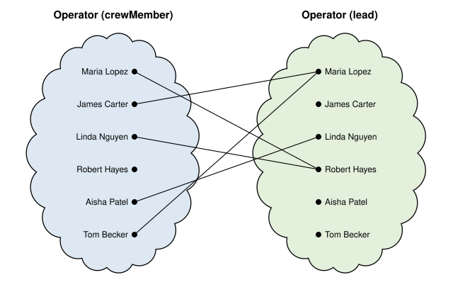
Read Figure 6.8 from the crew-member cloud. Every dot has at most one line: James Carter’s goes to Maria Lopez, Maria Lopez’s to Robert Hayes, and Robert Hayes’s dot has none. Each operator’s link can therefore be recorded as one value in that operator’s own row, the row of the crew member. The row is the crew member’s, and the value it holds is the lead’s key: the rule of one-to-many, read once per role. Read the other cloud, and the dots have any number of lines: Robert Hayes has two, and James Carter none. A lead’s row cannot hold its crew, just as a customer’s row cannot hold its orders.
Four details complete the mapping. The foreign key is named for the role of the operator it refers to, lead_fk, since a column named operator_fk would not say which of the two operators it means, and crew_fk would name the wrong one. It refers to operator_pk in its own table. The 0..1 at the lead end lets it be NULL, for the operator with no lead. A CHECK that lead_fk differs from operator_pk implements the rule that no operator is the operator’s own lead, which the class model states only in words. And by step 6 the foreign key refuses a deletion: a lead’s row cannot be deleted while any row’s lead_fk holds its key. Listing 6.8 gives the relational schema; the column is hypothetical, since the book’s database records no leads.
operator (operator_pk, employee_number, name, hire_date,
lead_fk)
primary key: operator_pk
alternate key: employee_number
lead_fk references operator_pk in operator,
may be NULLThe result. With the column of Listing 6.8 added, each operator’s row holds the key of its lead:
SELECT operator_pk, employee_number, name, lead_fk
FROM production.operator
ORDER BY operator_pk;| operator_pk | employee_number | name | lead_fk |
|---|---|---|---|
| 1 | E-201 | Maria Lopez | 4 |
| 2 | E-202 | James Carter | 1 |
| 3 | E-203 | Linda Nguyen | 4 |
| 4 | E-204 | Robert Hayes | NULL |
| 5 | E-205 | Aisha Patel | 3 |
| 6 | E-206 | Tom Becker | 1 |
A key means nothing to a reader, so a query that shows each operator beside the lead joins operator to itself, a self-join (Section 3.6), once as the crew member and once as the lead. A left join (Section 3.7) keeps the operator who has no lead:
SELECT o.name AS crew_member, l.name AS lead_name
FROM production.operator AS o
LEFT JOIN production.operator AS l
ON l.operator_pk = o.lead_fk
ORDER BY o.employee_number;| crew_member | lead_name |
|---|---|
| Maria Lopez | Robert Hayes |
| James Carter | Maria Lopez |
| Linda Nguyen | Robert Hayes |
| Robert Hayes | NULL |
| Aisha Patel | Linda Nguyen |
| Tom Becker | Maria Lopez |
The check. The table has six operators, so Table 6.5 has six rows, and Table 6.6 one for each of them. Figure 6.8 has five lines, and Table 6.5 has five values of lead_fk, one per line; the sixth row, Robert Hayes’s, is NULL, his dot with no line.
Interpretation. Robert Hayes leads Maria Lopez and Linda Nguyen, who lead the rest of the plant’s operators. A lead’s crew is found from the other side, as the rows whose lead_fk is the lead’s key, just as a customer’s orders are found as the rows whose customer_fk is the customer’s key.
Where it breaks. The CHECK refuses an operator as the operator’s own lead:
UPDATE production.operator
SET lead_fk = operator_pk
WHERE employee_number = 'E-204';ERROR: new row for relation "operator" violates check constraint "operator_check"
DETAIL: Failing row contains (4, E-204, Robert Hayes, 2019-10-07, 4).A longer loop is accepted, however. Were Robert Hayes’s lead set to James Carter, every row would still satisfy the foreign key and the CHECK, yet the chain of leads would never end, and a recursive query that follows it, like the one of Section 4.6, would never end either, unless a bound on its depth or a CYCLE clause stopped it. That the leads form a hierarchy is a rule the tables leave to a checking query.
The bill of materials is the other kind. Figure 6.9 shows it, a recursive association between an assembly and its components, with its association class BomLine.
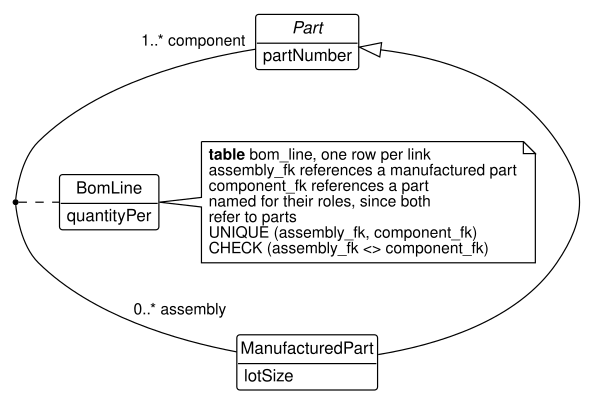
Its ends attach to a class and its subclass. A part may be a component of many assemblies, so, unlike an operator’s lead, a part’s links cannot be recorded as one value in its own row. The association in Figure 6.9 is many-to-many with an association class, so it maps to a table of its own, bom_line, with two foreign keys and the attribute quantity_per. Both foreign keys refer to parts, so they cannot both be named part_fk; the note names them for the roles at the ends of the line, assembly_fk and component_fk, which are the two role clouds of Figure 5.13. The pair is UNIQUE, as for any association class, and a CHECK that the two differ stops a part from being its own component, a rule the class model states only in words. The complete relational schema of Listing 6.9 shows both constraints.
bom_line
bom_line_pk INTEGER not NULL, generated
assembly_fk INTEGER not NULL
component_fk INTEGER not NULL
quantity_per NUMERIC(8,3) not NULL
primary key: bom_line_pk
alternate key: (assembly_fk, component_fk)
assembly_fk references part_fk in manufactured_part,
must not be NULL
component_fk references part_pk in part,
must not be NULL
assembly_fk: on delete no action, on update no action
component_fk: on delete no action, on update no action
check: quantity_per > 0
check: assembly_fk <> component_fkNotice that the two foreign keys of Listing 6.9 refer to different tables, although both lead to parts. assembly_fk refers to manufactured_part, since the assembly end of Figure 6.9 attaches to ManufacturedPart, and component_fk refers to part. The generalization between the two, mapped in Section 6.5, is what makes both refer to the same parts.
The two recursive associations of this section thus map by the rule of Section 6.3, asked of a class drawn once per role: where can a link be recorded as one value? An operator has at most one lead, so the link fits in the operator’s own row, and operator refers to itself. A part has many assemblies, so its links need a table of their own, with two foreign keys to parts.
6.3.6 Compositions and aggregations
Figure 6.10 shows the composition of an order’s lines in the order, from Figure 5.11.
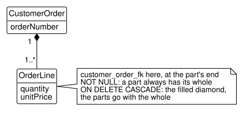
A composition is an association, so it maps by its multiplicities first: the 1 at the CustomerOrder end and the 1..* at the OrderLine end make it one-to-many, with the foreign key customer_order_fk in order_line, NOT NULL. The filled diamond adds step 6 of Figure 6.1: since a part cannot outlive its whole, deleting an order deletes its lines, and the foreign key is declared ON DELETE CASCADE, as the note says. Table 2.6 listed cascading as one of the responses a designer may choose; composition is the case that calls for it. Listing 6.10 gives the complete relational schema of the order_line table as the book’s database holds it at stage D3.
order_line
order_line_pk INTEGER not NULL, generated
customer_order_fk INTEGER not NULL
line_number INTEGER not NULL
product_fk INTEGER not NULL
quantity INTEGER not NULL
unit_price NUMERIC(10,2) not NULL
primary key: order_line_pk
alternate key: (customer_order_fk, line_number)
customer_order_fk references customer_order_pk in
customer_order, must not be NULL
product_fk references product_pk in product,
must not be NULL
customer_order_fk: on delete cascade, on update
no action
product_fk: on delete no action, on update no action
check: line_number > 0
check: quantity > 0
check: unit_price > 0The composition of Figure 6.10 is the line customer_order_fk: on delete cascade. The other foreign key, to product, maps an ordinary association and refuses, which Example 6.3 interprets. An aggregation, the hollow diamond, maps like an ordinary association, and its foreign key refuses, since its parts outlive the whole: machine.work_center_fk refuses the deletion of a work center that still has machines.
6.3.7 Ternary associations
A ternary association maps to a table with three foreign keys. Each link of Figure 5.14 connects an operator, a machine, and a work order, so each row holds three keys, and the attribute of the association class Run of Figure 5.15, the hours, joins them. Which columns form a key depends on the multiplicities. With 0..* at every end, as in Figure 5.15, a link can be recorded only in a table of its own, as for a many-to-many association, and the three foreign keys together are its key. The runs are hypothetical, so Listing 6.11 is written out by hand.
run (run_pk, operator_fk, machine_fk, work_order_fk, hours)
primary key: run_pk
alternate key: (operator_fk, machine_fk, work_order_fk)
operator_fk references operator_pk in operator,
must not be NULL
machine_fk references machine_pk in machine,
must not be NULL
work_order_fk references work_order_pk in work_order,
must not be NULLEach ring of Figure 5.14 is one row of run, and its three lines are the row’s three foreign keys. The alternate key of the three says that one association holds at most one link among a given operator, machine, and work order. A plant that records several runs of the same three on different days would add the date to the key, or promote the run to a class of its own, as the review of Example 5.3 suggested. The class Run then maps by step 1, and its association with each of the three classes by the one-to-many rule. That gives the same columns with no key over the three foreign keys, so the table holds any number of runs of the same three.
The following example maps a whole model and checks the result against it.
Example 6.3 (Mapping the refined order model of stage D3) The system. The class model of Figure 5.11: customers, their orders, the order lines composed in each order, and the products the lines are for.
The request. Produce the tables that implement the model, with their keys, foreign keys, and deletion rules.
Let’s apply the rules one construct at a time, and record where each element of the model goes:
| Model construct | Rule | Result in the tables |
|---|---|---|
Classes Customer, CustomerOrder, OrderLine, Product |
a table each, with a surrogate key | customer, customer_order, order_line, product, each with a _pk |
Business identifiers customerNumber, orderNumber, productNumber |
a UNIQUE column |
alternate keys |
requestedShipDate [0..1] |
a column that allows NULL | requested_ship_date may be NULL |
The other attributes: name, city, state, orderDate, description, listPrice, quantity, unitPrice |
a column each, NOT NULL |
name, city, state, order_date, description, list_price, quantity, unit_price |
Customer 1 to 0..* CustomerOrder |
a foreign key at the many end, NOT NULL |
customer_order.customer_fk |
CustomerOrder 1 to 1..* OrderLine, a composition |
a foreign key at the many end, NOT NULL, cascading |
order_line.customer_order_fk, ON DELETE CASCADE |
OrderLine 0..* to 1 Product |
a foreign key at the many end, NOT NULL |
order_line.product_fk |
The order line’s lineNumber is left for Section 6.4, where it becomes part of a key. The relational schema of the four tables, as the book’s database holds them at stage D3, is:
customer (customer_pk, customer_number, name, city, state)
primary key: customer_pk
alternate key: customer_number
customer_order (customer_order_pk, order_number, order_date,
requested_ship_date, customer_fk)
primary key: customer_order_pk
alternate key: order_number
customer_fk references customer_pk in customer,
must not be NULL
product (product_pk, product_number, description,
list_price)
primary key: product_pk
alternate key: product_number
order_line (order_line_pk, customer_order_fk, line_number,
product_fk, quantity, unit_price)
primary key: order_line_pk
alternate key: (customer_order_fk, line_number)
customer_order_fk references customer_order_pk in
customer_order, must not be NULL
product_fk references product_pk in product,
must not be NULLThe check. Every row of Table 6.7 appears in a line of Listing 6.12, and every column of the listing comes from a row of the ledger: the surrogate keys from its first row, the attributes from the next three, and the foreign keys from the last three. The one exception is line_number, which Section 6.4 accounts for. The deletion rules are in the complete schema of Listing 6.10: the on delete cascade of customer_order_fk is the composition’s diamond, and the no action of product_fk says that deleting a product that has been ordered is refused.
Interpretation. The two deletion rules say what the business can and cannot undo. An order can be canceled with its lines in one statement; a product that customers have ordered cannot be removed, since the order history refers to it. For example, order SO-5012 of stage D5 has two lines and no shipments:
SELECT o.order_number, l.line_number,
l.product_fk, l.quantity
FROM distribution.customer_order AS o
JOIN distribution.order_line AS l
ON l.customer_order_fk = o.customer_order_pk
WHERE o.order_number = 'SO-5012';| order_number | line_number | product_fk | quantity |
|---|---|---|---|
| SO-5012 | 1 | 3 | 4 |
| SO-5012 | 2 | 2 | 2 |
Both rows of Table 6.8 refer to the order through customer_order_fk. If the order is deleted, the cascade deletes these two order lines with it, and nothing else: the order’s customer and the lines’ products are untouched, since their foreign keys point the other way. Chapter 8 presents the DELETE statement and shows the cascade at work.
Where it breaks. The cascade stops at the order lines. An order that has been shipped has shipments that refer to it, and their foreign key refuses, so deleting a shipped order fails, as it should: a shipment is not part of an order, and its record must survive.
6.4 Mapping qualified associations
This section continues step 4 of Figure 6.1 with the qualified association, which becomes a composite key.
Figure 6.11 shows the order line qualified by its line number, from Figure 5.12.
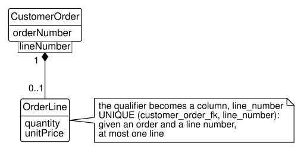
Recall that a qualifier reduces the multiplicity at the far end: in Figure 6.11, given an order and a line number, there is at most one order line, the 0..1 at the OrderLine end. The qualifier’s meaning is a uniqueness rule, and a table states uniqueness with a key. A qualified association therefore maps like the association without its qualifier, and the qualifier becomes a column that, with the foreign key to the qualifying class, forms a key. For the order line, the qualifier becomes the column line_number of order_line, and the key is UNIQUE (customer_order_fk, line_number), as the note of Figure 6.11 says: the alternate key of Listing 6.10. The foreign key customer_order_fk is the one the composition already put in order_line; the qualifier adds only its column and the key. Listing 6.13 gives the resulting relational schema of the order line.
order_line (order_line_pk, customer_order_fk, line_number,
product_fk, quantity, unit_price)
primary key: order_line_pk
alternate key: (customer_order_fk, line_number)
customer_order_fk references customer_order_pk in
customer_order, must not be NULL
product_fk references product_pk in product,
must not be NULLRead Listing 6.13 against Figure 6.11. The qualifier box lineNumber is the column line_number, and the 0..1 it produces at the OrderLine end is the alternate key (customer_order_fk, line_number): with a given order and line number, at most one row. The rest of the listing comes from the other two associations of the order line, with its order and its product.
The key is what keeps the qualifier’s meaning. Mapping the association without the qualifier’s key, as a plain column, would let two lines of one order share a line number, which the model forbids. It is the order line’s version of the rule of one link per pair: here, one line per pair of order and line number.
The same rule maps the routing of Figure 5.16. An operation is qualified by its operation number within its manufactured part, so operation has the column operation_number and the key UNIQUE (manufactured_part_fk, operation_number); operation 10 of the axle and operation 10 of the frame are different operations. The composition of the routing makes the same foreign key cascade, so an operation goes with its part’s routing. Listing 6.14 gives the complete relational schema of the operation table of stage P3.
operation
operation_pk INTEGER not NULL, generated
manufactured_part_fk INTEGER not NULL
operation_number INTEGER not NULL
description VARCHAR(40) not NULL
setup_minutes NUMERIC(6,1) not NULL
run_minutes_per_unit NUMERIC(6,2) not NULL
work_center_fk INTEGER not NULL
primary key: operation_pk
alternate key: (manufactured_part_fk, operation_number)
manufactured_part_fk references part_fk in
manufactured_part, must not be NULL
work_center_fk references work_center_pk in work_center,
must not be NULL
manufactured_part_fk: on delete cascade, on update
no action
work_center_fk: on delete no action, on update no action
check: operation_number > 0
check: setup_minutes >= 0
check: run_minutes_per_unit > 0The qualifier of Figure 5.16 is again an alternate key, (manufactured_part_fk, operation_number), and the filled diamond is again on delete cascade. The foreign key work_center_fk maps the ordinary association of an operation with the work center that performs it, and it refuses: a work center that some routing uses cannot be deleted.
A qualifier often looks like an identifier, and it is one, but only within its qualifying object. A line number, an operation number, a bin code within a warehouse: none is unique alone, and none should be made UNIQUE alone. The test is the one Section 2.2 applied to candidate keys: ask whether the business promises uniqueness for the qualifier alone, or only within something.
An {ordered} end (Section 5.4) maps the same way. The order becomes a column, a sequence number, in the table at the ordered end, and the foreign key with the sequence number is an alternate key, as if the association were qualified by the number. A query that wants the objects in order sorts by it; the rows themselves have no order (Section 2.1).
6.5 Mapping generalization
This section illustrates step 5 of Figure 6.1: how a superclass and its subclasses become tables.
Figure 6.12 shows the generalization of stage P1, in which every part is either manufactured or purchased (Figure 5.17), with notes on the mapping the book’s database uses.
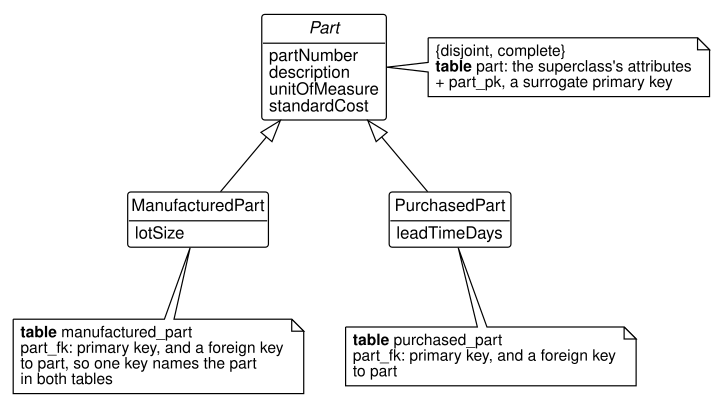
A generalization has no single obvious mapping, because a table has no notion of one kind of row being a kind of another. There are three ways to map it, and each keeps some of what the model says and gives up some. We map the parts of stage P1 all three ways.
6.5.1 A table for each class
The first mapping, the one of Figure 6.12 and of the book’s database, gives each class a table of its own. The superclass table part holds the superclass’s attributes, and each subclass table holds the subclass’s own attributes and a key. The key is the link: a subclass table’s primary key is also a foreign key to the superclass table, so a manufactured part and the part it is have the same key value in both tables. Listing 6.15 gives the resulting relational schema.
part (part_pk, part_number, description, unit_of_measure,
standard_cost)
primary key: part_pk
alternate key: part_number
manufactured_part (part_fk, lot_size)
primary key: part_fk
part_fk references part_pk in part, must not be NULL
purchased_part (part_fk, lead_time_days)
primary key: part_fk
part_fk references part_pk in part, must not be NULLNotice the name of the subclass tables’ key, part_fk. It is the primary key of manufactured_part and a foreign key to part at once, and the book names it for what it refers to, so the link to the superclass is visible in the listing. The generalization’s line of Figure 6.12 is that foreign key: every manufactured part is a part.
An object of a subclass is split across two tables, so a query that wants a whole manufactured part, its inherited attributes and its own, joins them on the shared key:
SELECT p.part_number, p.description, m.lot_size
FROM production.part AS p
JOIN production.manufactured_part AS m
ON m.part_fk = p.part_pk
ORDER BY p.part_number;| part_number | description | lot_size |
|---|---|---|
| AX-10 | Axle, 5/8 in | 400 |
| CF-310 | Cart frame | 80 |
| FR-110 | Hand truck frame | 100 |
| GC-300 | Steel garden cart | 40 |
| GC-400 | Poly garden cart | 20 |
| HT-100 | Two-wheel hand truck | 50 |
| HT-200 | Convertible hand truck | 25 |
| WA-10 | Wheel assembly, 10 in | 200 |
The table-per-class mapping keeps what the model says about associations. An association attached to a subclass maps to a foreign key that refers to the subclass’s table, and one attached to the superclass to the superclass’s table. Recall from Listing 6.9 that assembly_fk refers to manufactured_part and component_fk to part: the database itself enforces that only a manufactured part can be an assembly, while any part can be a component.
What the mapping does not keep is {disjoint, complete}. Nothing in Listing 6.15 stops a part from having a row in both subclass tables, which would break disjoint, or in neither, which would break complete. A query can find such parts, using the EXISTS of Section 3.8:
SELECT p.part_number
FROM production.part AS p
WHERE (EXISTS (SELECT *
FROM production.manufactured_part AS m
WHERE m.part_fk = p.part_pk)
AND EXISTS (SELECT *
FROM production.purchased_part AS u
WHERE u.part_fk = p.part_pk))
OR (NOT EXISTS (SELECT *
FROM production.manufactured_part AS m
WHERE m.part_fk = p.part_pk)
AND NOT EXISTS (SELECT *
FROM production.purchased_part AS u
WHERE u.part_fk = p.part_pk));| part_number |
|---|
Table 6.10 is empty: every part of stage P1 is in exactly one subclass table. The query does not prevent a violation; it finds one, and it is the kind of check that step 7 of Figure 6.1 runs, and that the book’s own tests run on the database.
6.5.2 A table for each subclass only
The second mapping drops the superclass table and repeats its attributes in each subclass table. Since the book’s database does not use it, Listing 6.16 is written out by hand.
manufactured_part (manufactured_part_pk, part_number,
description, unit_of_measure,
standard_cost, lot_size)
primary key: manufactured_part_pk
alternate key: part_number
purchased_part (purchased_part_pk, part_number, description,
unit_of_measure, standard_cost,
lead_time_days)
primary key: purchased_part_pk
alternate key: part_numberEach whole object is now one row, with no join, and a part cannot be in two subclasses unless it is entered twice. But the mapping loses the superclass. part_number is unique within each table, not across both, so a manufactured part and a purchased part could share a number. Worse, an association attached to the superclass has nowhere to go: component_fk must refer to any part, and a foreign key refers to one table. The bill of materials cannot be mapped at all. This mapping suits a superclass that no association and no query treats as a whole, which is rare in industrial data.
6.5.3 One table for the whole hierarchy
The third mapping puts every class’s attributes in one table, with a column that says which subclass each row belongs to. Such a column is called a discriminator. Listing 6.17 writes it out by hand.
part (part_pk, part_number, description, unit_of_measure,
standard_cost, part_kind, lot_size, lead_time_days)
primary key: part_pk
alternate key: part_number
may be NULL: lot_size, lead_time_days
check: part_kind IN ('manufactured', 'purchased')
check: (part_kind = 'manufactured'
AND lot_size IS NOT NULL
AND lead_time_days IS NULL)
OR (part_kind = 'purchased'
AND lead_time_days IS NOT NULL
AND lot_size IS NULL)Here disjoint and complete are enforced, and by a single column: each row has exactly one part_kind, and the first check allows only the two subclasses. The second check ties each kind to its own columns. The cost is in the NULLs, since every row leaves the other kind’s columns empty, and in the associations: assembly_fk can refer only to part, so the database can no longer stop a purchased part from being an assembly. You may read in older material that this mapping violates a normal form. It does not; every column still depends on the key. What it gives up is the ability of foreign keys to tell the subclasses apart.
Table 6.11 compares the three mappings.
| Table per class | Subclass tables only | One table | |
|---|---|---|---|
| Whole object in one row | no, a join | yes | yes |
| Enforces disjoint and complete | no, a query checks | partly | yes, with checks |
| Foreign keys to the superclass | yes | no | yes |
| Foreign keys to one subclass | yes | yes | no |
| NULLs for columns that do not apply | none | none | many |
The book maps every generalization a table per class, because the rows of Table 6.11 about foreign keys decide it for HG Industries: the bill of materials needs a foreign key to the superclass and one to a subclass at once. You should decide each generalization by the same test. Ask which associations attach to the superclass and which to the subclasses, and choose the mapping that lets the database enforce them.
6.6 Choosing and naming keys
This section returns to step 3 of Figure 6.1, a table’s identity, to weigh surrogate keys against natural keys and to state the book’s naming conventions.
A table’s primary key can come from the data or be invented for the table. A natural key, one made of the class’s own attributes, uses what the business already has: a customer’s number, a part’s number. A surrogate key, as Section 2.2 defined it, is invented: PostgreSQL generates it and it means nothing outside the database. Blaha and Premerlani call the two value-based and existence-based identity (Blaha and Premerlani 1998), and both work. Choosing between them is a design decision, made table by table, and one schema may use both. A surrogate key is a sound default, for four reasons:
- A surrogate key never changes. A natural key can: a customer renumbered after a merger would need every order’s foreign key changed with it. Recall from Section 2.3 that PostgreSQL refuses even to update a generated key.
- A surrogate key is one column. A natural key of a dependent class grows as the dependence deepens: an order line’s natural key is its order’s key and its line number, and a shipment line’s natural key would repeat all of that.
- Every foreign key is then one column of the same type, named in the same way, which makes joins uniform to write and to read.
- A surrogate key does not depend on the business’s identifiers being right. A customer entered with a mistyped number can be corrected without touching any reference to it.
A surrogate key does not replace the natural key; it adds to it. The business’s identifier is still a candidate key, and without its UNIQUE constraint the table would accept two rows for customer C-1001, each with its own surrogate key, and nothing would notice. Thus, whenever you give a table a surrogate key, you should declare its natural keys as alternate keys, as every table of the book’s database does.
A natural key earns its place, as a primary key or as the column a foreign key refers to, when the reasons above are weak for it: the business assigns it, it never changes and is never reused, it is short and one column, and people read it. The two-letter state codes of the customer table, the units of measure of parts, and the locker numbers of Example 6.1 qualify; a customer number that a merger might change does not. A foreign key may refer to any column declared UNIQUE, not only to a primary key, so a table can keep a surrogate primary key and still let other tables refer to its natural key. The referring row then carries an identifier that people read, and a question that wants only that identifier needs no join, as Table 6.3 showed. Its price is the first reason above: if the identifier ever changes, every referring row must change with it, which cascading the update (Section 2.3) can do but which a design should not have to rely on.
Many databases therefore mix the two kinds: surrogate keys for the business’s main things, such as customers, orders, and parts, and natural keys for codes and for stable identifiers that people read. The book’s database uses surrogate keys throughout, and stores codes such as states in the referring table itself rather than in a table of their own; Exercise 6.11 asks when a table of codes is worth having. That is one consistent policy, chosen so that every example follows the same rules. It is not the only sound one, and you should choose the keys of your own designs by the reasons of this section.
The names of keys follow five rules, which make the book’s schema readable without its diagram. Like the choice of surrogate keys, they are a convention: teams adopt their own, and every convention has exceptions, which a design should state when it makes one.
- A table’s surrogate key is named for the table with the suffix
_pk:customer_pk,order_line_pk. - A foreign key is named for the table it refers to, with the suffix
_fk:customer_fkrefers tocustomer_pk. - When a table refers to another twice, or refers to its own class, each foreign key is named for its role instead:
assembly_fkandcomponent_fkinbom_line. - A subclass table’s key, both its primary key and its reference to the superclass, is named for the superclass,
part_fk, and a table that refers to the subclass names its foreign key for the subclass,manufactured_part_fk. - A foreign key that refers to a natural key keeps that key’s name, since it holds the key’s value:
locker_numberin Listing 6.6.
Surrogate keys have a further cost, which the following example makes concrete.
Example 6.4 (Seeing what single-column foreign keys cannot enforce) The system. The shipments of stage D5. A shipment is made for one order, and each shipment line ships a quantity of one order line.
The request. Every shipment line must ship a line of its own shipment’s order: shipment SH-9004, made for order SO-5004, must not ship a line of order SO-5001. Can the tables enforce that rule?
The rule involves two paths from a shipment line to an order: through its shipment (shipment_line.shipment_fk to shipment.customer_order_fk) and through its order line (shipment_line.order_line_fk to order_line.customer_order_fk). The rule says the two paths must reach the same order. With surrogate keys, each foreign key of shipment_line is one number, and nothing in the tables compares where the two paths lead. A query can check the rule by joining along both paths:
SELECT sl.shipment_line_pk, s.shipment_number,
l.customer_order_fk AS line_order,
s.customer_order_fk AS shipment_order
FROM distribution.shipment_line AS sl
JOIN distribution.shipment AS s
ON s.shipment_pk = sl.shipment_fk
JOIN distribution.order_line AS l
ON l.order_line_pk = sl.order_line_fk
WHERE l.customer_order_fk <> s.customer_order_fk;| shipment_line_pk | shipment_number | line_order | shipment_order |
|---|---|---|---|
Table 6.12 is empty, so the data of stage D5 obeys the rule, but only because it was loaded correctly: the database would have accepted a line that broke it.
Composite foreign keys can enforce the rule. If a shipment line holds its order’s key itself, one foreign key can pair it with the shipment and another with the order line. Natural keys supply such keys directly. With value-based identity, an order line’s key is its order and line number, so a shipment line that refers to an order line must hold the order’s key, and a shipment can declare its number unique together with its order’s key. Listing 6.18 writes the two tables out by hand.
shipment (shipment_number, customer_order_fk, shipped_on,
carrier, warehouse_fk)
primary key: shipment_number
unique: (shipment_number, customer_order_fk)
customer_order_fk references customer_order_pk in
customer_order, must not be NULL
warehouse_fk references warehouse_pk in warehouse,
must not be NULL
shipment_line (shipment_number, customer_order_fk,
line_number, quantity)
primary key: (shipment_number, line_number)
(shipment_number, customer_order_fk) references
(shipment_number, customer_order_fk) in shipment
(customer_order_fk, line_number) references
(customer_order_fk, line_number) in order_lineThe unique: line of shipment is not a key, since shipment_number alone identifies a shipment. PostgreSQL lets a foreign key refer only to columns declared UNIQUE or a primary key, so the pair is declared unique for the shipment line’s foreign key to refer to.
In Listing 6.18, the shipment line holds one customer_order_fk, and both of its composite foreign keys use it. The first says the shipment was made for that order; the second says the order line belongs to that order. A shipment line that shipped another order’s line would need two different values in one column, which is impossible. The rule is enforced by the structure of the keys.
The natural keys are a convenience here, not a requirement. The same two composite foreign keys work beside surrogate primary keys, if shipment_line gains a customer_order_fk column that must not be NULL and shipment and order_line each declare UNIQUE the pair of columns that a foreign key refers to. The column must not be NULL because PostgreSQL does not check a composite foreign key when one of its columns is NULL; a line with no order would pass both foreign keys. That is the real cost of surrogate keys: they do not carry the order’s key along, so a designer who wants the rule enforced must add a NOT NULL column and two constraints that the tables would not otherwise need.
The check. Table 6.12 joins along the two paths that the rule compares, one join per foreign key, and keeps only the rows where they disagree, so an empty result means that every shipment line passes.
Interpretation. The book keeps its surrogate keys, without the added column, and checks the rule with a query, a choice made for the reasons listed above. The example shows what the choice gives up, and a designer who judges this rule important enough can have the database enforce it with composite foreign keys. The tests that load the book’s database run the same check on stage D5.
Where it breaks. A check query finds a violation after it has happened; it does not stop one. A program that records shipments must therefore apply the rule itself, as the programs of Chapter 10 can.
With the keys chosen and named, a mapping is complete: every table has its columns, its keys, its foreign keys, and their deletion rules. Chapter 7 presents the review of step 7 in full, and Chapter 8 writes the result as CREATE TABLE statements.
6.7 Summary
Mapping follows seven steps, from a reviewed class model to a complete relational schema. Classes, attributes, identity, associations, generalization, deletion rules, and a check, in that order; a check that fails sends the designer back to the model.
Each class maps to a table, and each attribute to a column. The column’s type and constraints implement the attribute’s domain: NOT NULL from a multiplicity of one, UNIQUE from a business identifier, and CHECK for a domain narrower than its type. Each table gets a primary key the class model does not name.
An association maps according to where a link can be recorded as one value. A one-to-many association maps to a foreign key at the many end, NOT NULL when the one end’s minimum is one; a one-to-one association to a UNIQUE foreign key; a many-to-many association, with its association class, to a table of its own whose foreign keys together are a key. A recursive association maps the same way, its foreign keys named for their roles, so a recursive one-to-many association gives a table a foreign key to itself. A composition’s foreign key cascades a deletion.
The side of a one-to-one association is a design decision. When the minimums do not settle it, the dependent object, then the end that could become many, then the table users start from decide where the foreign key goes. One foreign key enforces one end fully and only the maximum of the other, and one that refers to an identifier people read saves the everyday question a join.
A qualifier maps to a composite key. The qualifier becomes a column that, with the foreign key to the qualifying class, is UNIQUE, which keeps the qualifier’s meaning in the tables.
A generalization maps in one of three ways, each keeping part of the model. A table per class keeps every association but leaves {disjoint, complete} to a checking query; subclass tables alone lose the superclass; one table with a discriminator enforces the subclasses but not associations to one of them. The associations decide which to use.
A table’s key is chosen, and a schema may mix surrogate and natural keys. A surrogate key never changes and is always one column, which makes it a sound default; a natural key earns its place when it is stable, short, and read by people, and a foreign key may refer to it. Either way, the natural key’s UNIQUE constraint is what stops duplicates. Keys are named for their tables, _pk and _fk, or for their roles. A rule comparing two paths to the same row needs composite foreign keys, which natural keys supply and surrogate keys need an added column for; without them, a query must check the rule.
Chapter 7 reviews the tables that a mapping produces, and Chapter 8 creates them.
6.8 Exercises
Exercise 6.1 Specify the domains of the CustomerOrder class of Figure 5.1 in the form of Table 6.2, and give the SQL type and constraints of each column. Then compare your result with the complete relational schema of Listing 2.2, and explain each difference.
Exercise 6.2 Map the Shipment class of the stage D5 class model of Figure 5.19, with its associations to CustomerOrder and Warehouse and its association with OrderLine (Shipment 0..* to 1..* OrderLine), whose association class is ShipmentLine, in the form of Table 6.7. Give the keys of the shipment_line table. Say which foreign keys cascade and which refuse by step 6 of Figure 6.1, and why.
Exercise 6.3 Map the association class Certification between Operator and Machine (Exercise 5.5).
- Give the table, its columns, and its keys.
- Explain which constraint enforces the rule of one certification per operator and machine.
- If the business decided to keep a history of certifications, how would the class model change, and how would the table’s keys change?
Exercise 6.4 The class model of Figure 5.16 has multiplicity 1 at the WorkCenter end of its aggregation with Machine, and the table machine has work_center_fk declared NOT NULL.
- What does that say about a machine that has been bought but not yet installed, or taken out of service and stored?
- Change the model so that such a machine can be recorded, and give the change to the table.
- Should the foreign key cascade? Explain from the difference between aggregation and composition.
Exercise 6.5 Each machine may have at most one maintenance plan, and each plan belongs to exactly one machine (Exercise 5.17).
- In which table does the foreign key go, and why?
- Which two constraints does it carry, and what would go wrong without each?
- Could the foreign key be placed in the other table instead? What would it cost?
Exercise 6.6 A trucking fleet tracks its toll transponders. The toll authority issues each transponder with a serial number printed on its case, and the fleet keeps no spares: each truck carries exactly one transponder, and each transponder is mounted in exactly one truck. When a truck is retired, its transponder is moved to the truck that replaces it. Trucks are identified by a fleet number painted on the cab, such as T-12.
- Draw the association with its multiplicities. Do the minimums, or the first question of Section 6.3.3, decide where the foreign key goes? Why or why not?
- The fleet manager says that a truck that runs in a second toll region may soon need a second transponder. Where does the foreign key go, and why?
- Dispatch’s most frequent question starts from a truck and wants the truck’s own details (its model and driver) with the serial number of its transponder. Which table would the third question of Section 6.3.3 then point to, and does that change your choice in (b)?
- Write the relational schema of the two tables for your choice, with the foreign key referring to an identifier people read. What does that choice cost, and which rule of the association can the schema not enforce?
Exercise 6.7 Map the bins of Exercise 5.7, qualified by bin code within a warehouse. Give the table, and explain why bin_code must not be declared UNIQUE by itself.
Exercise 6.8 Map the generalization of Figure 6.12 to one table, as in Listing 6.17.
- Explain how the two
CHECKconstraints enforce disjoint and complete. - Which rule of the bill of materials can the database no longer enforce, and why?
- A manufactured part’s lot size is required. How does the single table enforce that, and how does the table-per-class mapping of Listing 6.15?
Exercise 6.9 The query of Table 6.10 finds parts that break disjoint or complete.
- Explain each half of its condition, and say which rule each half checks.
- Rewrite it as two queries, one for each rule, using
INTERSECTfor one andEXCEPTfor the other (Section 3.9).
Exercise 6.10 HG Industries decides to record, for each machine, whether it is CNC or manual. A CNC machine has a controller model and a program memory in megabytes; a manual machine has neither. Certifications on CNC machines, and only on them, must record the controller version the operator was trained on. Record that version in a second association class, CncCertification, between Operator and the subclass for CNC machines; the association class Certification between Operator and Machine stays as it is.
Model the change as a generalization of Machine, choose a mapping, and justify the choice with Table 6.11. Give the resulting relational schema.
Exercise 6.11 The customer table stores each customer’s state as a two-letter code, and nothing stops a code such as ZZ.
- Design a table of states with the code as its natural primary key, and change
customerto refer to it. Give the relational schema. - Why is a natural key a sound choice here, when the book’s database uses surrogate keys everywhere else?
- What does the new table give the business besides a check on the code?
Exercise 6.12 A plant’s access system records who opens which door. Each employee has an employee number, assigned at hiring and never reused, and carries a badge whose number is printed on it and recorded with the employee; a lost badge is replaced with a badge of a new number. Each employee belongs to a department, identified by a three-letter code such as MNT that the plant has used for twenty years. Each door has a number stenciled on it, such as D-14, and doors are never renumbered. Each entry in the access log records a badge reading at a door at a moment.
- For each of the tables
employee,department,door, andaccess_entry, choose a surrogate or a natural primary key, and justify each choice by the reasons of Section 6.6. - For each foreign key, say whether it should refer to a surrogate or to a natural key, and why.
- Should
access_entryrecord the badge number or the employee? What goes wrong with the other choice when a badge is replaced?
Exercise 6.13 HG Industries starts moving stock between its warehouses. A transfer moves a quantity of one product from one warehouse to another on a date.
- Model the transfer, with its associations and multiplicities.
- Map it to a table, naming its foreign keys by the rules of Section 6.6, and give the relational schema.
- Add a constraint that stops a transfer from a warehouse to itself.
Exercise 6.14 Using Listing 6.18:
- Suppose shipment SH-9004, made for order SO-5004, were given a line for line 1 of order SO-5001. Write the values the shipment line would need, and say which foreign key rejects it.
- What does the natural-key design cost, compared with the surrogate keys of Listing 2.4? Name two costs.
The remaining exercises map the models of chapter 5’s exercises outside HG Industries. Each figure is the instructor’s model of that exercise, so that your mapping does not depend on your own answer to it. For each, give the relational schema of every table in the notation of Section 2.4, with its primary key, its alternate keys, and each foreign key with the table it refers to and whether it may be NULL; follow the book’s naming rules (Section 6.6); and say, for each foreign key, what happens when the row it refers to is deleted.
Exercise 6.15 Map the tool crib of Exercise 5.18, drawn in Figure 6.13.
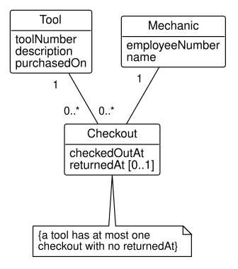
- Give the relational schema of the three tables.
- The note says a tool has at most one checkout without a return time. Can a
UNIQUEconstraint ontool_fkenforce it? What would it forbid? - PostgreSQL can enforce the rule with a unique index on
tool_fkrestricted to the rowsWHERE returned_at IS NULL. Explain what that index allows and what it refuses.
Exercise 6.16 Map the gauges and calibrations of Exercise 5.19, drawn in Figure 6.14.
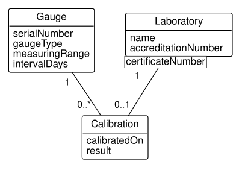
- Give the relational schema.
- What does the qualifier on
certificateNumberbecome? Why mustcertificate_numbernot beUNIQUEby itself? - A laboratory loses its accreditation and is to be removed from the database. What should happen to its calibrations, and which delete response gives that?
Exercise 6.17 Map the kanban loop of Exercise 5.20, drawn in Figure 6.15.
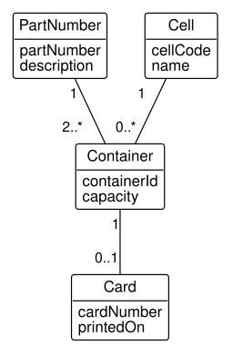
- Give the relational schema. For the association of
ContainerandCard, say in which table the foreign key goes and why (Section 6.3.2). - Which multiplicity of the model can no table definition enforce? How would you check it with a query?
Exercise 6.18 Map the clinic of Exercise 5.21, drawn in Figure 6.16.
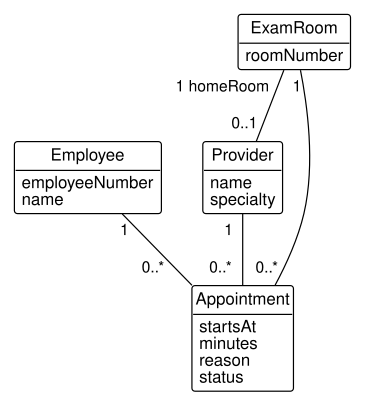
- Give the relational schema.
- Two associations join
ProviderandExamRoom, one directly and one throughAppointment. Name the foreign keys each produces, and explain why the home room’s needs aUNIQUEconstraint and the appointment’s does not. - Write a
CHECKconstraint or explain why none can stop two appointments in the same room at overlapping times.
Exercise 6.19 Map the project network of Exercise 5.22, drawn in Figure 6.17.
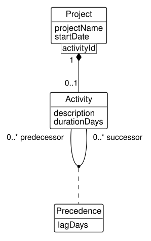
- Give the relational schema with surrogate keys, as the book does.
- The model requires a precedence to join two activities of the same project. Show that your schema does not enforce it, with two rows that break it.
- Give a second schema in which
activityhas the natural key(project_fk, activity_id)andprecedencerefers to both activities through it, sharing oneproject_fkcolumn. Explain why this schema enforces the rule, and what it costs (recall Exercise 6.14).
Exercise 6.20 Map both models of the plant locations of Exercise 5.23, drawn in Figure 6.18.
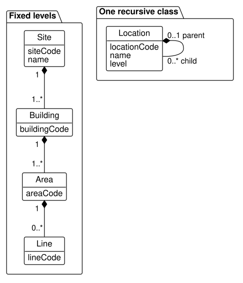
- Give the relational schema of the fixed levels, with the delete responses the compositions call for.
- Give the relational schema of the recursive class. Which foreign key may be NULL, and which rows have NULL in it?
- In the recursive table, what stops a line from being made the parent of a site? Propose a check the database can make, or say why it cannot.
Exercise 6.22 Map the container yard of Exercise 5.25, drawn in Figure 6.20.
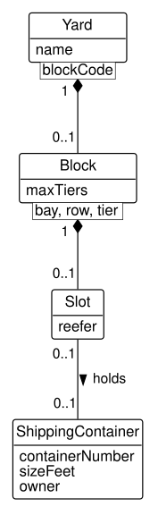
- Give the relational schema. Watch the names of the slot’s columns: which of the model’s attribute names is a reserved word of the SQL standard?
- Give the alternate key of
slot, and explain why a key of three numbers alone would be wrong.
Exercise 6.23 Map the equipment rental of Exercise 5.27, drawn in Figure 6.21.
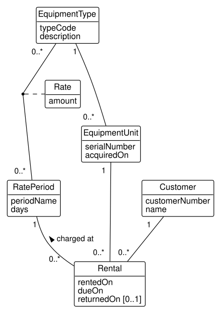
- Give the relational schema.
- A rental refers to its unit and its rate period, not to a rate. Explain how a query finds the amount a rental is charged at, naming each table the joins pass through.
- The yard raises its weekly rates. What happens to the charges of rentals already returned, and what would you change if past charges must not move?
Exercise 6.24 Map the fleet of Exercise 5.28, drawn in Figure 6.22.
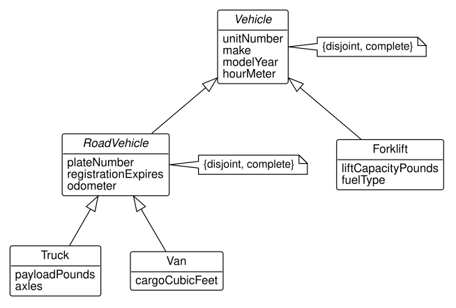
- Give the relational schema for a table for each class (Section 6.5.1).
- Give it for one table for the whole hierarchy (Section 6.5.3), with the
CHECKconstraints that keep each kind’s columns filled or empty. - Choose between them with Table 6.11, and say why.
Exercise 6.25 Map the route network of Exercise 5.30, drawn in Figure 6.23.
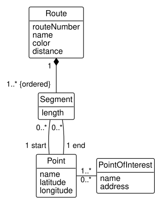
- Give the relational schema. Map the
{ordered}end as this chapter describes. - Write a query that lists the points of route 7, in order, using only the segments.
- The study this model comes from stored a sequence number on each point of a route as well as on each segment. What does that add, and what can go wrong?
Exercise 6.26 Map the cards, accounts, and trips of Exercise 5.34, drawn in Figure 6.24.
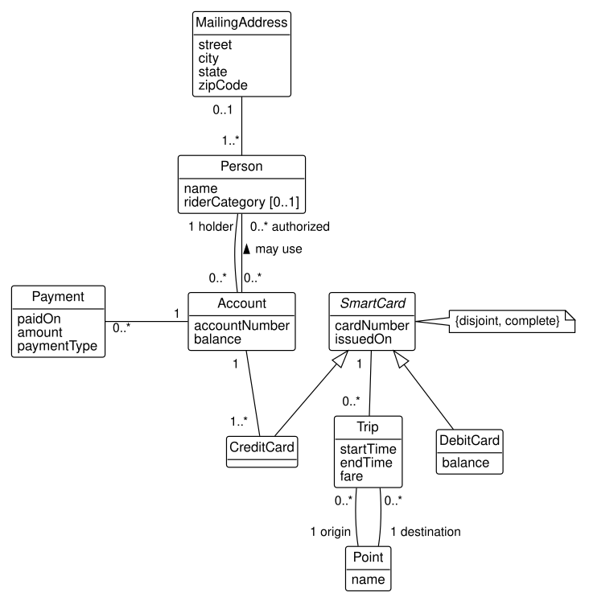
- Choose a mapping for the generalization of
SmartCard, and justify it. Where does the foreign key of the association betweenAccountandCreditCardgo? - Give the relational schema of the rest: people, addresses, accounts, the authorizations, trips, and payments.
- The study this exercise comes from mapped a generalization of transactions (fares and payments) to a table for each subclass only, repeating the common columns, so that a trip could refer to its fare directly. Explain what that mapping gives up.
Exercise 6.27 Reverse the mapping of this chapter on the Chinook database of Section C.11, loaded with the book’s loader (Section A.6): from its tables, recover the class model.
- Draw the class diagram, with multiplicities, and no foreign keys or identifiers.
- Which table implements a many-to-many association with no attributes? Which implements a recursive association, and what are its role names?
- Is
invoice_linean association class ofInvoiceandTrack, or a class of its own? Use the test of Section 5.5.